| 陆军科技 | 海军科技 | 空军科技 | 电子与工业 |
|---|---|---|---|
无
|
|
没有
|
|
| 陆军学说 | 海军学说 | 空军学说 |
|---|---|---|
|
|
「无」 |
原页面：Japan
The  日本帝国 was the leader of the Axis powers in the Pacific Theater. They have a population of 64.86 M (core) and an additional 33.19 M (non-core). Japan seeks to further expand its dominion in East Asia, its "Greater East Asian Co-Prosperity Sphere" at the expense of all caught in its way. Its military has countless plans drawn up for its conquest of Asia, some involve an invasion of the Chinese mainland and splitting up
日本帝国 was the leader of the Axis powers in the Pacific Theater. They have a population of 64.86 M (core) and an additional 33.19 M (non-core). Japan seeks to further expand its dominion in East Asia, its "Greater East Asian Co-Prosperity Sphere" at the expense of all caught in its way. Its military has countless plans drawn up for its conquest of Asia, some involve an invasion of the Chinese mainland and splitting up  中国 into loyal puppets, others calling for an invasion of
中国 into loyal puppets, others calling for an invasion of  印度 and others involve invading European possessions in Indonesia and Indochina. Even more tenuous plans call for an invasion of Soviet Siberia, to claim its vast resources and wealth, another plan involves targeting
印度 and others involve invading European possessions in Indonesia and Indochina. Even more tenuous plans call for an invasion of Soviet Siberia, to claim its vast resources and wealth, another plan involves targeting  澳大利亚和
澳大利亚和 新西兰 with Japan's biggest ambition being the concept of an invasion of the
新西兰 with Japan's biggest ambition being the concept of an invasion of the  美国 in order to secure the nation's resources and industry and to topple Japan's perhaps biggest rival in the Pacific.
美国 in order to secure the nation's resources and industry and to topple Japan's perhaps biggest rival in the Pacific.
After Japan's unification during the Meiji Restoration of 1868, the Japanese Empire had undergone a period of rapid westernization and industrialization, with the goal of making Japan a power on par with the other western nations. With its newfound power, Japan sought to make up for its lack of resources by securing them overseas, through invading neighboring nations, starting with its invasion of Korea in 1895, the First Sino-Japanese War in 1894-1895, where Japan conquered Taiwan. Succeeding in this, Japan later fought and won the Russo-Japanese War against the Russian Empire in 1904-1905, cementing itself as one of the world's great powers and first non-European nation to achieve this status. Allying itself with the United Kingdom in 1902, Japan joined World War I on the side of the Entente, conquering Germany's possessions in the Pacific and China.
During the Great Depression, the Japanese government had become increasingly militaristic, leading to the conquest of Manchuria in 1931, creating the puppet state of  满洲国. In 1933, further Chinese border territories were also conquered, leading to further puppet states, like
满洲国. In 1933, further Chinese border territories were also conquered, leading to further puppet states, like  蒙疆.
蒙疆.
Some consider that World War II actually began with the invasion of  中国 by Japan, first by taking Manchuria and installing their 傀儡国 the
中国 by Japan, first by taking Manchuria and installing their 傀儡国 the  满洲国 regime. In 1937, after the Marco Polo Bridge Incident, Japan declared war on China, beginning the Second Sino-Japanese War in which Japan invaded and conquered much of eastern China, installing additional puppet regimes along the way, including
满洲国 regime. In 1937, after the Marco Polo Bridge Incident, Japan declared war on China, beginning the Second Sino-Japanese War in which Japan invaded and conquered much of eastern China, installing additional puppet regimes along the way, including  蒙疆 and the "Reorganized National Government of the Republic of China". After invading China, Japan struck southwards, invading and conquering
蒙疆 and the "Reorganized National Government of the Republic of China". After invading China, Japan struck southwards, invading and conquering  英属马来亚 and the
英属马来亚 and the  荷属东印度 (Indonesia), in hopes of securing their resources, followed by an invasion of the
荷属东印度 (Indonesia), in hopes of securing their resources, followed by an invasion of the  英属印度.
英属印度.
On August 6, 1945, the  美国 dropped a nuclear bomb on Hiroshima, flattening the center of the city. Late in the evening of August 8, according to the Yalta agreements, the
美国 dropped a nuclear bomb on Hiroshima, flattening the center of the city. Late in the evening of August 8, according to the Yalta agreements, the  苏联 declared war on Japan, and shortly after midnight on August 9, attacked Manchukuo and Mengjiang. Only hours later, the Americans dropped a second nuclear bomb on Nagasaki, destroying a small portion of it. The total shock of these events forced Emperor Hirohito to intervene and compel the big six to agree on the terms of ending the war, taken by the Allies in the Potsdam Conference. After several days of backroom negotiations and failed attempts to destroy the stockpiles of biological and chemical weapons of Unit 731 in Manchuria, which were captured by Soviet paratroopers, and the collapse of the Kwantung Army, in August 15, Hirohito addressed the nation by radio and announced the surrender of Japan. The signing ceremony of the Act of Capitulation took place on September 2 aboard the United States Navy battleship USS Missouri (BB-63).
苏联 declared war on Japan, and shortly after midnight on August 9, attacked Manchukuo and Mengjiang. Only hours later, the Americans dropped a second nuclear bomb on Nagasaki, destroying a small portion of it. The total shock of these events forced Emperor Hirohito to intervene and compel the big six to agree on the terms of ending the war, taken by the Allies in the Potsdam Conference. After several days of backroom negotiations and failed attempts to destroy the stockpiles of biological and chemical weapons of Unit 731 in Manchuria, which were captured by Soviet paratroopers, and the collapse of the Kwantung Army, in August 15, Hirohito addressed the nation by radio and announced the surrender of Japan. The signing ceremony of the Act of Capitulation took place on September 2 aboard the United States Navy battleship USS Missouri (BB-63).

 日本, as one of the seven major powers, has a unique national focus tree. It is set to receive its own unique expansion of their national focus tree in the "No Compromise, No Surrender" Expansion Pack DLC.
日本, as one of the seven major powers, has a unique national focus tree. It is set to receive its own unique expansion of their national focus tree in the "No Compromise, No Surrender" Expansion Pack DLC.
The Japanese national focus tree can be divided into 6 branches and 20 sub-branches, with 3 additional branches enabled if the DLC  不妥协，不投降 is disabled:
不妥协，不投降 is disabled:
The following branches are only available if the  不妥协，不投降 DLC is 不 enabled:
不妥协，不投降 DLC is 不 enabled:
The following branches are available if the  不妥协，不投降 DLC is enabled:
不妥协，不投降 DLC is enabled:
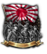
Imperial Army和 State Shintoism.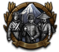
The Yamato Spirit. Japan will then follow an event chain that has the Emperor assassinated and then follow the chain to where Empress Nagako seeks revenge. Japan will be able to gain special project research bonuses and leader bonuses for Empress Nagako.The following branches are available whether or not if the  不妥协，不投降 DLC is enabled:
不妥协，不投降 DLC is enabled:
Showa Statism. Japan may then propose the Tripartite Pact with the  法西斯主义 majors of Europe.
法西斯主义 majors of Europe.
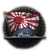
Imperial Navy, gives bonuses to naval technology as well as increase the 海军阵营's influence.
 日本 开局拥有以下国家精神：
日本 开局拥有以下国家精神：
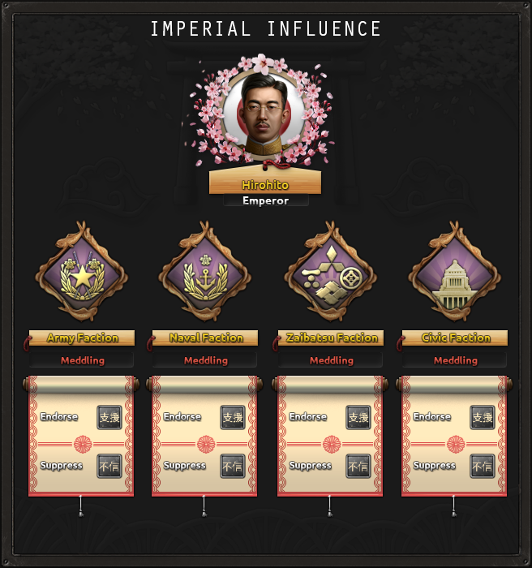
The Imperial Influence mechanic introduced in  不妥协，不投降 simulates
不妥协，不投降 simulates  日本的 internal factions vying for control in the country and the influence of the Emperor. In this mechanic,
日本的 internal factions vying for control in the country and the influence of the Emperor. In this mechanic,  日本 is affected by a dynamic modifier containing bonuses and penalties pertaining to the influence each faction has in the nation. The factions are the Army, the Navy, the Zaibatsu and Civic factions. These factions gain or decrease influence through events, decisions and focuses.
日本 is affected by a dynamic modifier containing bonuses and penalties pertaining to the influence each faction has in the nation. The factions are the Army, the Navy, the Zaibatsu and Civic factions. These factions gain or decrease influence through events, decisions and focuses.
 日本开局拥有 3 个可用科研槽；另有 2 个可通过国策树解锁。
日本开局拥有 3 个可用科研槽；另有 2 个可通过国策树解锁。
| 陆军科技 | 海军科技 | 空军科技 | 电子与工业 |
|---|---|---|---|
无
|
|
没有
|
|
| 陆军学说 | 海军学说 | 空军学说 |
|---|---|---|
|
|
「无」 |
| 陆军科技 | 海军科技 | 空军科技 | 电子与工业 |
|---|---|---|---|
无
|
|
没有
|
未启用《抵抗运动》
|
| 陆军学说 | 海军学说 | 空军学说 |
|---|---|---|
|
|
|
 日本 has a number of unique names for various technologies and equipment, listed here. Note that generic names are not listed.
日本 has a number of unique names for various technologies and equipment, listed here. Note that generic names are not listed.
| 类型 | 1918 | 1936 | 1938 | 1939 | 1940 | 1941 | 1942 | 1943 | 1944 |
|---|---|---|---|---|---|---|---|---|---|
| 支援武器 | Type 3 Heavy Machine Gun & Type 11 mortar | Type 11 LMG & Type 10 grenade discharger | Type 99 LMG & Type 94 mortar | Type 1 HMG & Type 2 12 cm Mortar | |||||
| 步兵装备 | Type 38 | Type 99 | Type 100/40 | Type 100/44 | |||||
| 步兵反坦克 | Type 2 Rifle Grenade | Type 4 AT Rocket Launcher | |||||||
| 摩托化步兵 | Isuzu Type 94 | ||||||||
| 机械化 | Type 1 Ho-Ki | Type 1 Ho-Ha | Type 4 Ka-Tsu | ||||||
| 两栖牵引车 | Ka-Tsu | Ka-Tsu Kai | |||||||
| 装甲车 |
Osaka | Chiyoda | Kokusan |
| 科技年份 | 两栖 | 轻型（反坦克/自行火炮/防空） | 中型（反坦克/自行火炮/防空） | Modern | 重型（反坦克/自行火炮/防空） | Super-Heavy |
|---|---|---|---|---|---|---|
| 1918 | Ko-Gata | |||||
| 1934 | Type 94 | Type 95（Ka-To／Ji-Ro／无） | ||||
| 1936 | Ha-Go (NA / Ke-Nu / Ko-Hi AA) | |||||
| 1938 | Type 2 Ka-Mi | Chi-Ha（Ho-Ni I／Ho-I／无） | ||||
| 1940 | Chi-Nu（Ho-Ni III／Ho-Ro／无） | Iwakuro (Ho-Ri / Ho-Chi / NA) | ||||
| 1941 | Ke-Ni (Ho-Ru / Ku-Se / Ta-Se) | Type 2604 | ||||
| 1943 | Chi-Ri（Na-To／Ha-To／无） | O-I | ||||
| 1945 | Type 61 | |||||
| 备注: Without 一步不退, Medium Tank I and II are unlocked one year later. Amphibious tanks are then unlocked in 1940 and 1942, the second one is called Type 3 Ka-Chi. | ||||||
| 科技年份 | 防空炮 | 火炮 | 火箭炮 | 反坦克炮 |
|---|---|---|---|---|
| 1934 | Type 38 75 mm | |||
| 1936 | Type 98 20 mm | Type 94 37 mm | ||
| 1939 | Type 91 10 cm | |||
| 1940 | Type 2 20 mm | Type 4 20 cm | Type 1 37 mm | |
| 1942 | Type 96 15 cm | |||
| 1943 | Type 99 88 mm | Type 4 40 cm | Type 1 47 mm |
| 科技年份 | 近距空中支援（舰载） | 战斗机（舰载） | 海军轰炸机（舰载） | 重型战斗机 | 战术轰炸机 | 战略轰炸机 | 侦察机 | 运输机 |
|---|---|---|---|---|---|---|---|---|
| 1933 | Type 91 | G3M Rikko | NA | Ki-56 | ||||
| 1936 | Ki-32 (D1A2) | Ki-27 (A5M) | G3M1 (B5N) | Ki-38 | Ki-21 | Ki-20 | Ki-46 | |
| 1940 | Ki-51 (D3A) | Ki-43 Hayabusa (A6M Zero-sen) | G4M (B6N) | Ki-45 Toryu | Ki-48 | Ki-49 Donryu | J1N1-C | Ki-57 |
| 1944 | Ki-66 (D4Y Suisei) | Ki-84 Hayate (A7M Reppu) | P1Y Ginga (B7A) | Ki-102 | Ki-67 | G8N Renzan | Ki-74 | |
| 喷气发动机技术 | ||||||||
| 1945 | Kikka | NA | ||||||
| 1950 | J7W Shinden-Kai | NA | NA | |||||
Japan is located in the far east of Asia. It is mainly made up of the four major islands: Kyushu, Shikoku, Honshu, and Hokkaido. Japan also owns the Korean peninsula, East Hebei, the city of Dalian, South Sakhalin and a lot of strategic islands in the Pacific including: Taiwan, Okinawa, Saipan, Guam and Iwo Jima. Japan also controls the puppet states of  满洲国和
满洲国和 蒙疆 (1939 only).
蒙疆 (1939 only).
Mainland Japan is dominated by mountains, which run through almost the entire country. It has a couple of urban areas, namely Tokyo, Hiroshima, and Nagasaki. Flat, arable land can be found around the major cities of Japan.
Japan borders with the  苏联, both directly through the Sakhalin island and the northern Korean border as well as the northern border of their puppet
苏联, both directly through the Sakhalin island and the northern Korean border as well as the northern border of their puppet  满洲国. They also border
满洲国. They also border  冀察 through East Hebei. Mainland Japan is surrounded by sea, with the Sea of Japan to the west, the East China Sea to the south, and the Pacific Ocean to the east.
冀察 through East Hebei. Mainland Japan is surrounded by sea, with the Sea of Japan to the west, the East China Sea to the south, and the Pacific Ocean to the east.
 日本帝国 owns 19 core and 12 colonial states.
日本帝国 owns 19 core and 12 colonial states.
| 州 | 城市 | 地形（省份数） | 区域 | 是否核心州 | ||
|---|---|---|---|---|---|---|
| 加罗林群岛 | 特鲁克 雅浦 | 5 1 |
小岛 | 42,357 | ||
| Chungcheong-Jeolla | Gunsan Jeju Kōshū Seishū Taiden Zenshū |
0 0 1 1 1 1 |
乡村区 | 3,761,368 | ||
| Dalian | Ryojun Zhuanghe |
1 0 |
稀疏城市区 | 1,034,074 | ||
| 冀东 | Tangshan Tongzhou |
1 2 |
发达乡村区 | 6,960,000 | ||
| Gangwon | Shunsen | 1 | 乡村区 | 1,328,410 | ||
| Gyeonggi | Keijō | 3 | 发达乡村区 | 6,961,368 | ||
| Gyeongsang | Fuzan Taikyū |
5 1 |
发达乡村区 | 4,761,368 | ||
| Hamgyong | Kankō Seishin |
1 1 |
乡村区 | 2,258,066 | ||
| Hokkaido | Asahikawa Hakodate Nemuro Sapporo Wakkanai |
5 2 0 15 0 |
乡村区 | 3,012,000 | ||
| Hokuriku | Kanazawa | 15 | 城市区 | 3,871,000 | ||
| 硫磺岛 | 硫磺岛 | 5 | 小岛 | 1,018 | ||
| Kansai | Himeji Ise Kushimoto Kyoto Maizuru Osaka Suzuka Wakayama |
0 0 0 20 1 40 0 0 |
大都市区 | 12,015,000 | ||
| 关东 | Chiba Hitachi Iwaki Saitama Takasaki Tokyo Utsunomiya Yokohama |
0 0 0 0 0 50 0 25 |
特大都市区 | 15,773,000 | ||
| Kita-Tohoku | Akita Aomori Hachinohe Morioka Mutsu |
2 5 0 1 0 |
发达乡村区 | 4,266,278 | ||
| Kitakyūshū | Aso Beppu Fukuoka Kokura Kumamoto Kurume Nagasaki Oita Sasebo Tsushima |
0 0 5 10 5 0 15 0 0 0 |
城市区 | 6,046,000 | ||
| Koshinetsu | Nagano Niigata Sado Toyama |
10 10 0 1 |
城市区 | 2,064,402 | ||
| Kuril Islands | – | – | 微型岛屿 | 15,000 | ||
| Marcus Island | – | – | 微型岛屿 | 42 | ||
| 马绍尔群岛 | 埃内韦塔克 夸贾林 | 1 3 |
小岛 | 52,517 | ||
| 南九州 | Kagoshima Miyazaki |
15 2 |
乡村区 | 3,023,000 | ||
| Minami Tohoku | Fukushima Sakata Sendai |
2 0 15 |
发达乡村区 | 2,796,521 | ||
| Okinawa | Naha | 10 | 小岛 | 578,000 | ||
| 帕劳 | 科罗尔 恩加拉尔德 | 2 1 |
小岛 | 12,100 | ||
| Pyongan-Hwanghae | Heijō Kaishū Shingishū |
3 1 1 |
发达乡村区 | 4,516,134 | ||
| 塞班 | 塞班 | 1 | 小岛 | 21,657 | ||
| San'in | Matsue Tottori |
0 1 |
乡村区 | 1,111,000 | ||
| San'yo | Fukuyama Hiroshima Okayama Shimonoseki Taishakugawa Dam Yamaguchi |
0 20 10 2 0 0 |
密集城市区 | 4,431,000 | ||
| Shikoku | Kochi Matsuyama Takamatsu Tokushima |
8 10 0 0 |
发达乡村区 | 3,310,000 | ||
| South Sakhalin | Shikuka Toyohara |
0 1 |
乡村区 | 331,943 | ||
| Taiwan | Taihoku Takao |
5 1 |
稀疏城市区 | 5,291,537 | ||
| Tokai | Hamamatsu Nagoya Ōi Dam Shizuoka |
0 25 0 3 |
密集城市区 | 7,174,000 |
 Non-Aligned (Despotic)
Non-Aligned (Despotic)
| 政党 | 意识形态 | 支持率 | 党派领袖 | 国名 | 是否执政？ |
|---|---|---|---|---|---|
| 国民同盟 | 35% | 足立谦三 | 大日本帝国 | No | |
| 日本共产党（JCP） / 讲座派 | 2% | 德田球一 | Japanese People's Republic | No | |
| 立宪民政党 | 23% | 片山哲 | 日本国 | No | |
| 举国一致内阁 | 40% | 冈田启介 | 日本帝国 | 是 |
日本 的可能国家领袖。
的可能国家领袖。
| 意识形态 | 肖像 | 名称 | 党派 | 特质 | 效果 | 可用 |
|---|---|---|---|---|---|---|
自由主义 |
片山哲 | 立宪民政党 | 坚定的社会民主主义者 | 起始领袖 | ||
保守主义 |
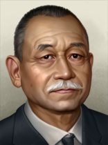 |
冈田启介 | 立宪民政党 | 温和派政治家 | Can power via focus 冈田的军队肃军演说 | |
自由主义 |
町田忠治 | 立宪民政党 / 立宪政友会 / 举国一致内阁 | Rikken Minseitō Leader Popular Liberal |
|
Can come to power via focus 町田忠治的内阁 or via event The Emperor Nominates a new Prime Minister or via event Conclusion of the 1936 General Election | |
社会主义 |
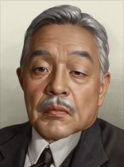 |
Isoo Abe | 立宪民政党 / 立宪政友会 / 举国一致内阁 | 社会主义政治家 Shakai Taishūtō Leader |
|
Can come to power via focus 安部矶雄的内阁 or via event The Emperor Nominates a new Prime Minister |
保守主义 |
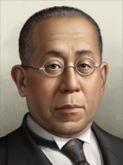 |
德川家达 | 立宪民政党 / 立宪政友会 / 举国一致内阁 | Popular Diplomat The Tokugawa Heir |
|
Can come to power via focus 德川家达的内阁 or via event The Emperor Nominates a new Prime Minister |
自由主义 |
鸠山一郎 | 立宪政友会 / 自由民主党 | Rikken Seiyūkai Leader Jimintō Leader |
|
Can come to power via focus 鸠山一郎的内阁 | |
保守主义 |
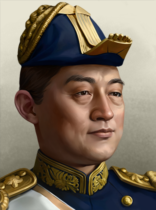 |
米内光政 | 立宪政友会 | 温和的海军领袖 | Can come to power via focus 米内光政的内阁 | |
马克思主义 |
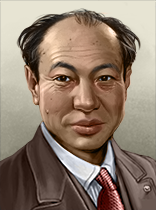 |
德田球一 | 日本共产党（JCP） / 讲座派 | 日本共产党首任主席 |
|
起始领袖 |
马克思主义 |
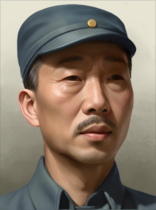 |
野坂参三 | 讲座派 | Counter Insurgency Expert First Secretary of the Japanese Communist Party |
|
Can can come to power via event A leader for the Kōza-ha |
马克思主义 |
Hitoshi Yamakawa | 劳农派 | 社会主义革命者 | 可以通过事件A leader for the Rōnō-ha上台 | ||
马克思主义 |
山川菊荣 | 劳农派 | 女权主义革命者 | 可以通过事件A leader for the Rōnō-ha上台 | ||
佛教社会主义 |
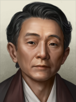 |
妹尾义郎 | 新兴佛教青年同盟 | 日莲马克思主义者 |
|
可以通过事件The Revitalization of Buddhism上台 |
法西斯主义 |
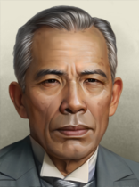 |
足立谦三 | 国民同盟 | – | – | 起始领袖 |
天皇法西斯主义 |
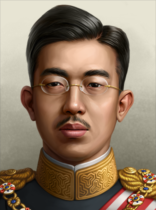 |
Hirohito | 皇道派 / 大政翼赞会 | Emperor Shōwa |
|
Can come to power via focus 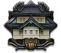 赋予天皇权力 if he isn't assassinated and the nation has become |
天皇法西斯主义 |
Yasuhito | 皇道派 | 元化天皇 |
|
Can come to power via focus 赋予天皇权力 if Hirohito is assassinated and the nation has become | |
天皇法西斯主义 |
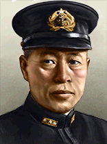 |
山本五十六 | 大政翼赞会 | 日本海军出身的首相 | Can come to power via focus 山本的内阁 | |
天皇法西斯主义 |
东条英机 | 大政翼赞会 | 日本陆军出身的首相 | Can come to power via focus 东条的内阁 | ||
天皇法西斯主义 |
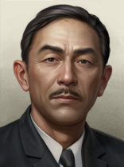 |
田吾作征五 | 大政翼赞会 / 东方会 | 东方会领袖 | 可以通过事件A Joint Demand from the Tokkō and the Bureaucrats上台 | |
天皇法西斯主义 |
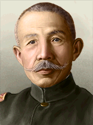 |
荒木贞夫 | 皇道派 | Staunch Traditionalist Sōtō |
|
可以通过事件The Question of Morality, Bushido and Fascism上台 |
天皇法西斯主义 |
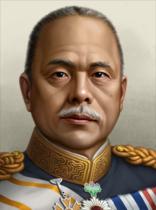 |
宇垣一成 | 大政翼赞会 | 外交派首相 | Can come to power via focus 大政翼赞会 if he is the leader previously | |
天皇法西斯主义 |
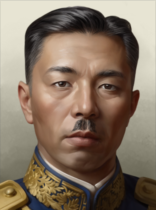 |
近卫文麿 | 大政翼赞会 | 贵族首相 |
|
Can come to power via focus 大政翼赞会 if he is the leader previously |
军国主义 |
冈田启介 | 举国一致内阁 | 温和派政治家 | 起始领袖 | ||
军国主义 |
Hirohito | 皇道派 / 大政翼赞会 | Emperor Shōwa |
|
Can come to power via focus 赋予天皇权力 if he isn't assassinated and the nation has remained | |
Despotism |
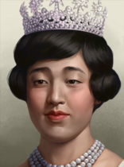 |
Nagako | 皇道派 | – | – | 可以通过事件Kōdōha Officers Indicted for Hirohito's Murder上台 |
Despotism |
Yasuhito | 皇道派 | 元化天皇 |
|
Can come to power via focus 赋予天皇权力 if Hirohito is assassinated and the nation has remained | |
军国主义 |
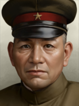 |
岬甚三郎 | 皇道派 | 军人首相 Sōtō |
|
Can come to power via focus 尊皇讨奸 |
军国主义 |
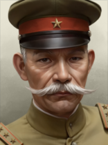 |
林铣十郎 | 联合政府 | 军人首相 | Can come to power via focus 切腹辩论 | |
军国主义 |
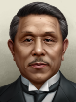 |
广田弘毅 | 举国一致内阁 | 反共首相 | Can come to power via focus 军部大臣现役武官制 | |
军国主义 |
荒木贞夫 | 皇道派 | Staunch Traditionalist Sōtō |
|
可以通过事件Question of the Military Clique Leadership上台 | |
军国主义 |
宇垣一成 | 举国一致内阁 | 外交派首相 | Can come to power via focus 惩戒滨田国松 | ||
军国主义 |
近卫文麿 | 联合政府 | 贵族首相 |
|
Can come to power via focus 近卫第一次内阁 |
日本 的可能国名。
的可能国名。
| 同上 | 国家名称 | Condition |
|---|---|---|
| 日本国 | ||
| Japanese People's Republic | ||
| 大日本帝国 | ||
| 日本帝国 | ||
| Occupied Japan | 美国 |
傀儡国: Japan has a puppet at the start of the 1936 startup;  满洲国 and by 1939 it also has
满洲国 and by 1939 it also has  蒙疆 as a puppet. Both of these countries are located in Northern China and are quite lackluster in terms of industry and military.
蒙疆 as a puppet. Both of these countries are located in Northern China and are quite lackluster in terms of industry and military.
日本 的部长与军事幕僚。
的部长与军事幕僚。
| 肖像 | 名称 | 特质 | 效果 | 要求 | 花费（） |
|---|---|---|---|---|---|
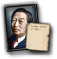 |
Sanzo Nosaka | 共产主义革命者 |
|
|
150 |
| Kijuro Shidehara | 民主改革者 |
|
|
150 | |
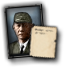 |
Kingoro Hashimoto | 法西斯煽动家 |
|
|
150 |

|
米内光政 | 沉默的实干家 |
|
– | 150 |

|
Hiroshi Oshima | 恐怖亲王 |
|
– | 150 |

|
Chiune Sugihara | 仁慈绅士 |
|
– | 150 |
| Takuo Godo | 军工实业家 | – | 150 | ||
| Tsugumichi Arisugawa (R) | 神秘绅士 |
|
|
150 |
| 肖像 | 名称 | 特质 | 效果 | 要求 | 花费（） |
|---|---|---|---|---|---|
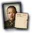 |
山下奉文 | 大战略专家 |
|
– | 150 |
| 寺内寿一 | 军事理论家 |
|
– | 100 | |
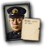 |
山本五十六 | 海军航空先驱 |
|
– | 150 |
| 源田实 | 海军理论家 |
|
– | 100 | |
| 德川好敏 | 突击航空 |
|
– | 150 | |
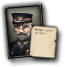 |
Hino Kumazo | 空战理论家 |
|
– | 100 |
| 仁科芳雄 | 核科学家 |
|
– | 100 | |
| 糸川英夫 | 火箭科学家 |
|
– | 100 |
| 肖像 | 名称 | 特质 | 效果 | 要求 | 花费（） |
|---|---|---|---|---|---|

|
Prince Kan'in Kotohito | 陆军进攻（专精） |
|
– | 50 |
| Hajime Sugiyama | Army Drill (Genius) |
|
|
200 | |
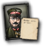 |
东条英机 | 陆军士气（专家） |
|
– | 100 |
| 肖像 | 名称 | 特质 | 效果 | 要求 | 花费（） |
|---|---|---|---|---|---|
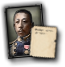 |
Prince Fushimi Hiroyasu | 海军航空（专家） |
|
– | 100 |
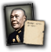 |
Osami Nagano | 破交作战（专家） |
|
– | 50 |
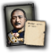 |
Shigetaro Shimada | 决战（专家） |
|
– | 100 |
| 肖像 | 名称 | 特质 | 效果 | 要求 | 花费（） |
|---|---|---|---|---|---|
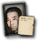 |
Torashiro Kawabe | Night Operations (Specialist) |
|
– | 50 |
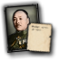 |
Korechika Anami | Ground Support (Specialist) |
|
– | 50 |
| Kenji Doihara | All-Weather (Specialist) |
|
– | 50 |
| 肖像 | 名称 | 特质 | 效果 | 要求 | 花费（） |
|---|---|---|---|---|---|
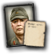 |
Hitoshi Imamura | 陆军后勤（专家） |
|
– | 100 |
| Yasuji Okamura | 步兵（专家） |
|
– | 100 | |
| Shunroku Hata | 隐蔽（专家） |
|
– | 100 | |
| Mitsuo Fuchida | 战术轰炸（专家） |
|
– | 100 | |
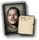 |
Tateo Kato | Air Combat Training (Genius) |
|
– | 200 |
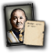 |
Chuichi Nagumo | Carriers (Expert) |
|
– | 100 |
| Nishizo Tsukahara | Naval Strike (Specialist) |
|
– | 50 | |
| Soemu Toyoda | Capital Ships (Specialist) |
|
– | 50 | |
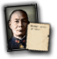 |
Matome Ugaki | 海军防空（专家） |
|
– | 100 |
| 肖像 | 名称 | 特质 | 要求 | |||||
|---|---|---|---|---|---|---|---|---|
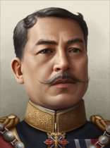 |
Prince Kan'in Kotohito | 4 | 5 | 3 | 3 | 3 | – | |
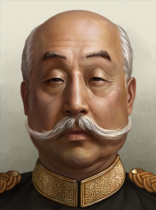 |
Prince Nashimoto Morimasa | 4 | 4 | 4 | 3 | 4 | – | |
| Yasuhito | 3 | 4 | 2 | 3 | 2 |
|
| 肖像 | 名称 | 特质 | 要求 | |||||
|---|---|---|---|---|---|---|---|---|
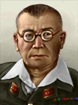 |
Akira Mutō | 2 | 2 | 2 | 2 | 1 | – | |
| Asaichi Isobe | 1 | 1 | 1 | 1 | 1 |
| ||
| Harukichi Hyakutake | 3 | 2 | 2 | 3 | 3 | – | ||
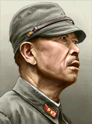 |
Hatazō Adachi | 2 | 1 | 2 | 2 | 2 | – | |
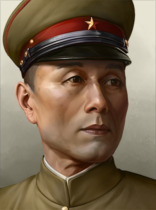 |
Hayao Tada | 3 | 3 | 2 | 2 | 3 |
| |
| Hideki Tōjō | 3 | 4 | 2 | 4 | 2 | – | ||
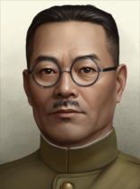 |
Hideo Iwakuro | 2 | 2 | 2 | 2 | 1 | – | |
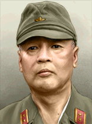 |
Hitoshi Imamura | 3 | 3 | 1 | 3 | 3 | – | |
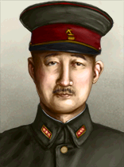 |
寺内寿一 | 4 | 4 | 4 | 3 | 2 | – | |
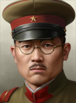 |
Isamu Chō | 2 | 2 | 1 | 2 | 2 |
| |
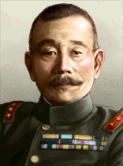 |
Iwane Matsui | 1 | 1 | 1 | 1 | 1 | – | |
| Jinzaburō Masaki | 2 | 2 | 1 | 2 | 2 |
| ||
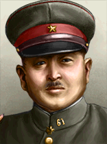 |
Jō Iimura | 2 | 1 | 2 | 2 | 2 | – | |
| Kanji Ishiwara | 1 | 1 | 1 | 1 | 1 | – | ||
| Keisuke Fujie | 3 | 1 | 3 | 3 | 3 | – | ||
| Kenji Doihara | 1 | 1 | 1 | 1 | 1 | – | ||
| Kenkichi Ueda | 4 | 3 | 2 | 4 | 4 | – | ||
| Kiichirō Higuchi | 2 | 2 | 2 | 2 | 1 | – | ||
| Kingoro Hashimoto | 2 | 2 | 1 | 2 | 2 |
| ||
| Kiyosada Koda | 2 | 3 | 2 | 1 | 1 |
| ||
| Kuniaki Koiso | 2 | 2 | 2 | 2 | 1 | – | ||
| Masaharu Homma | 2 | 2 | 2 | 1 | 2 | – | ||
| Masakazu Kawabe | 3 | 3 | 2 | 2 | 3 | – | ||
| Masanobu Tsuji | 2 | 3 | 1 | 2 | 2 | – | ||
| Masatane Kanda | 2 | 2 | 2 | 1 | 2 | – | ||
| Michitarō Komatsubara | 2 | 2 | 2 | 1 | 2 | – | ||
| Naruhiko Higashikuni | 3 | 3 | 3 | 2 | 2 | – | ||
| Otozō Yamada | 3 | 3 | 1 | 3 | 3 | – | ||
| Prince Tsuneyoshi Takeda | 2 | 2 | 1 | 2 | 2 | – | ||
| Prince Yasuhiko Asaka | 3 | 3 | 1 | 3 | 3 | – | ||
| Rikichi Andō | 3 | 1 | 3 | 3 | 3 | – | ||
| Saburō Aizawa | 2 | 2 | 1 | 2 | 2 |
| ||
| 荒木贞夫 | 2 | 1 | 2 | 2 | 2 |
| ||
| Seishirō Itagaki | 3 | 3 | 4 | 2 | 3 | – | ||
| 林铣十郎 | 3 | 3 | 2 | 3 | 2 | |||
| Shigeru Honjō | 1 | 1 | 1 | 1 | 1 |
| ||
| Shirō Nonaka | 2 | 2 | 2 | 2 | 1 |
| ||
| Shizuichi Tanaka | 4 | 4 | 3 | 2 | 4 | – | ||
| Shunroku Hata | 4 | 4 | 4 | 3 | 4 | – | ||
| Tadaichi Wakamatsu | 3 | 2 | 2 | 3 | 3 | – | ||
| Takaji Muranaka | 1 | 1 | 1 | 1 | 1 |
| ||
| Takashi Sakai | 3 | 2 | 2 | 3 | 3 | – | ||
| Teruzō Andō | 2 | 2 | 1 | 2 | 2 |
| ||
| 山下奉文 | 5 | 5 | 5 | 4 | 4 | – | ||
| Toshizō Nishio | 3 | 4 | 2 | 4 | 2 | – | ||
| Yasuhide Kurihara | 1 | 1 | 1 | 1 | 1 |
| ||
| Yasuji Okamura | 1 | 1 | 1 | 1 | 1 | – | ||
| Yoshijirō Umezu | 3 | 3 | 3 | 1 | 3 | – | ||
| 德川好敏 | 2 | 2 | 1 | 3 | 1 | – | ||
| Yoshiyuki Kawashima | 2 | 1 | 1 | 3 | 2 |
|
| 肖像 | 名称 | MNV |
COR |
特质 | 要求 | |||
|---|---|---|---|---|---|---|---|---|
| Chūichi Nagumo | 3 | 2 | 3 | 3 | 2 | – | ||
| Gengo Hyakutake | 2 | 1 | 2 | 2 | 2 | – | ||
| Hiroaki Abe | 2 | 3 | 1 | 2 | 1 | – | ||
| 山本五十六 | 5 | 5 | 2 | 3 | 6 | – | ||
| Jisaburo Ozawa | 5 | 5 | 3 | 3 | 4 | – | ||
| Kiyoshi Hasegawa | 2 | 2 | 2 | 1 | 2 | – | ||
| Masafumi Arima | 3 | 3 | 2 | 3 | 3 | – | ||
| Mineichi Koga | 4 | 4 | 2 | 4 | 3 | – | ||
| 米内光政 | 2 | 2 | 1 | 2 | 2 |
| ||
| Nobutake Kondō | 3 | 4 | 2 | 2 | 2 | – | ||
| Shigeyoshi Inoue | 2 | 2 | 1 | 1 | 3 | – | ||
| Soemu Toyoda | 3 | 5 | 1 | 2 | 2 | – | ||
| Tadashige Daigo | 1 | 1 | 1 | 1 | 1 | – | ||
| Takeo Takagi | 3 | 3 | 1 | 3 | 3 | – | ||
| Tamon Yamaguchi | 4 | 5 | 2 | 4 | 3 | – | ||
| Teijirō Toyoda | 2 | 2 | 2 | 2 | 3 | – | ||
| Yuzuru Hiraga | 3 | 3 | 3 | 3 | 2 | – | ||
| Zengo Yoshida | 2 | 2 | 2 | 1 | 2 | – |
| 标志 | 名称 | 类型 | 效果 | 要求 | 花费（） |
|---|---|---|---|---|---|

|
Kawasaki | 工业财团 | – | 150 | |

|
Sumitomo | 电子学财团 |
|
– | 150 |

|
Idemitsu Kosan | 炼油财团 |
|
– | 150 |
日本 的设计公司。
的设计公司。
| 标志 | 名称 | 类型 | 效果 | 要求 | 花费（） |
|---|---|---|---|---|---|
| 大阪陆军兵工厂 | 坦克设计商 |
选择此设计公司后，只要它仍在受雇，就会永久影响其受雇期间研究的所有装备的性能。 |
– | 150 |
| 标志 | 名称 | 类型 | 效果 | 要求 | 花费（） |
|---|---|---|---|---|---|
| 吴海军兵工厂 | 战列舰队设计商 |
选择此设计公司后，只要它仍在受雇，就会永久影响其受雇期间研究的所有装备的性能。 |
|
75 | |
| 横须贺海军兵工厂 | 太平洋舰队设计商 |
选择此设计公司后，只要它仍在受雇，就会永久影响其受雇期间研究的所有装备的性能。 |
– | 150 | |
| 舞鹤海军兵工厂 | 护航舰队设计商 |
选择此设计公司后，只要它仍在受雇，就会永久影响其受雇期间研究的所有装备的性能。 |
– | 150 | |
| 佐世保海军兵工厂 | 近海防御舰队设计商 |
选择此设计公司后，只要它仍在受雇，就会永久影响其受雇期间研究的所有装备的性能。 |
– | 150 |
| 标志 | 名称 | 类型 | 效果 | 要求 | 花费（） |
|---|---|---|---|---|---|

|
Mitsubishi | 专注机动性的飞机设计师 |
选择此设计公司后，只要它仍在受雇，就会永久影响其受雇期间研究的所有装备的性能。 |
|
150 |
| Aichi | 专注航程的飞机设计师 |
选择此设计公司后，只要它仍在受雇，就会永久影响其受雇期间研究的所有装备的性能。 |
|
150 | |
| Nakajima | 重型飞机设计商 |
选择此设计公司后，只要它仍在受雇，就会永久影响其受雇期间研究的所有装备的性能。 |
– | 150 | |
| Yokosuka | 海军飞机设计商 |
选择此设计公司后，只要它仍在受雇，就会永久影响其受雇期间研究的所有装备的性能。 |
– | 150 |
| 标志 | 名称 | 类型 | 效果 | 要求 | 花费（） |
|---|---|---|---|---|---|
| Tokyo Arsenal | 步兵装备设计商 |
|
– | 150 | |
| Nissan | 摩托化装备设计商 |
|
– | 150 |
 日本 可使用这些军工产业组织。
日本 可使用这些军工产业组织。
| ||||||||||||||||||||||||||||||||||||||||||||||||||||||||||||||
| ||||||||||||||||||||||||||||||||||||||||||||||||||||||||||||||||||||||||||||||||||||||||||||||||||||||||||||||||||||||||||||||||||||||||||||||||||||||||||||||||||||||||||||||||||||||||||||||||||||||||||||||||||||||||||||||||||||||||||||||||||||||||||||||||||||||||||||
| ||||||||||||||||||||||||||||||||||||||||||||||||||||||||||||||||||||||||||||||||||||||||||||||||||||||||||||||||||||||||||||||||||||||||||||||||||||||||||||||||||||||||||||||||||||||||||||||||||||||||||||||||||||||||||||||||||||||||||||||||||||||||||||||||||||||||||||||||||||
| ||||||||||||||||||||||||||||||||||||||||||||||||||||||||||||||||||||||||||||||||||||||||||||||||||||||||||||||||||||||||||||||||||||||||||||||||||||||||||||||||||||||||||||||||||||||||||||||||||||||||||||||||||
 日本 starts with the following laws:
日本 starts with the following laws:
1936
| 征兵法案 | 贸易法案 | 经济法令 |
|---|---|---|
有限征兵
|
有限出口
|
部分动员
|
1939
| 征兵法案 | 贸易法案 | 经济法令 |
|---|---|---|
按需服役
|
封闭经济
|
全面动员
|
年份 |
军用工厂 |
海军船坞 |
民用工厂 |
燃料筒仓 |
Refineries |
建筑槽位 |
|---|---|---|---|---|---|---|
| 1936 | 16 | 14 | 24 (-13) | 4 | 1 | 116 |
*红色 中的数字表示生产消费品所需的民用工厂数量，依据经济法案以及军用与民用工厂总数向上取整。
年份 |
石油 |
铝 |
橡胶 |
钨 |
钢铁 |
铬 |
煤 |
|---|---|---|---|---|---|---|---|
| 1936 | 17 (-4) | 12 (-3) | 0 | 26 (-6) | 103 (-26) | 94 (-23) | 74 (-18) |
*这些数字表示游戏开始一小时后可用的资源量。红色 中的数字表示因贸易法案而留作出口的资源量。
| 类型 | # 1936 | # 1939 | |
|---|---|---|---|
| 步兵 | 45 | 76 | |
| Bicycle Units | 0 | 3 | |
| 海军陆战队 | 1 | 3 | |
| 骑兵 | 9 | ||
| 摩托化步兵 | 2 | ||
| 轻型坦克 | 0 | 3 | |
| 中型坦克 | 3 | 14 | |
| 师总数 | 60 | 110 | |
| 已用人力 | 489.10K | 888.20K | |
| 师 | 名称列表 | # 1936 | # 1939 | 支援连 | 战斗营 |
|---|---|---|---|---|---|
| 步兵师 | 15 | 0 | 12x | ||
| 步兵师 | 0 | 21 | 12x | ||
| Mixed Brigade | 3 | 14 | 5x | ||
| 骑兵师 | 9 | 9 | 6x | ||
| 摩托化师 | 2 | 0 | 12x | ||
| 摩托化师 | 0 | 2 | 12x | ||
| 陆战师 | 1 | 3 | 6x | ||
| Garrison Units | 30 | 37 | 6x | ||
| Ginrinbutai | Bicycle Units | 0 | 3 | 4x | |
| 伞兵师 | 0 | 0 | 3x | ||
| 步兵师 | 0 | 18 | 9x | ||
| 装甲师 | 0 | 3 | 3x | ||
| * 标记的是在 1939 年开局中被移除的师。 ^ 标记仅存在于 1939 年开局中的师。 | |||||
| 类型 | Chassis | Role | 主武器 | Turret | Suspension | 装甲(等级) | 发动机（等级） | 特殊模块 |
|---|---|---|---|---|---|---|---|---|
| Type 95 Ha-Go | 改进型轻型 | 轻型坦克 | 小型火炮 | 单人 | Bogie | 铆接（2） | 汽油（4） | 附加机枪 |
| Type 97 Chi-Ha^ | 基础中型 | 中型坦克 | 近距支援炮 | 双人 | Bogie | 铆接（2） | Diesel (4) | 基础无线电 |
| Type 94 Tankette* | 基础轻型 | 轻型坦克 | 重机枪 | 单人 | Bogie | Riveted | Gasoline | |
| Type 89 I-Go | 战间期中型 | 中型坦克 | 近距支援炮 | 双人 | Bogie | Riveted | Diesel (4) | 附加机枪 |
| Type 92 Tankette* | 战间期轻型 | 轻型坦克 | 重机枪 | 单人 | Bogie | Riveted | Gasoline | 重机枪 |
| * 表示某个变体已「过时」。 ^ 标记仅存在于 1939 年开局中的变体。 | ||||||||
| 类型 | # 1936 | # 1939 | |
|---|---|---|---|
| 航空母舰 | 4 | 6 | |
| 战列巡洋舰 | 3 | ||
| 战列舰 | 6 | ||
| 重巡洋舰 | 14 | 16 | |
| 轻巡洋舰 | 21 | 24 | |
| 驱逐舰 | 94 | 104 | |
| 潜艇 | 52 | 59 | |
| 运输船队 | 400 | ||
| 舰船总数 | 194 | 218 | |
| 已用人力 | 112.65K | 132.35K | |
| 类型 | Class | Hull | 发动机 | # 1936 | # 1939 | 设计说明 | ||
|---|---|---|---|---|---|---|---|---|
| CV | Akagi* | 改装战列舰 | 重型 II | 1 | 1 | 3x Hangar Space, Secondary Battery II, Anti-Air I, Cruiser Armor I | ||
| CV | Hosho* | 改装巡洋舰 | 航空母舰 I | 1 | 1 | Hangar Space, Secondary Battery I | ||
| CV | Kaga* | 改装战列舰 | 重型 II | 1 | 1 | 3x Hangar Space, Secondary Battery II, Anti-Air I, Cruiser Armor I | ||
| CV | Ryujo* | 基础型航空母舰 | 航空母舰 I | 1 | 1 | 2x Hangar Space, Secondary Battery I, Anti-Air I | ||
| CV | Soryu | 基础型航空母舰 | 航空母舰 II | 2 | 2 | 3x 机库空间、副炮 I、防空炮 I | ||
| CV | Zuiho* | 改装巡洋舰 | 航空母舰 II | 2 | 2x Hangar Space, Secondary Battery I, Anti-Air I | |||
| CV | Shokaku^ | Improved Carrier | 航空母舰 II | 1 | 4x Hangar Space, Dual-Purpose Secondary Battery I, Anti-Air II | |||
| SHBB | Yamato^ | 超重型战列舰 | 重型 II | 1 | 2x Super-Heavy Battery, Dual-Purpose Secondary Battery II, 2x Secondary Battery II, Anti-Air I, Anti-Air II, Fire Control I, Super-Heavy Armor, Floatplane Catapult I | |||
| BB | Fuso* | 早期重型舰船 | 重型 II | 2 | 2 | 3x Heavy Battery I, 2x Secondary Battery I, Anti-Air I, Fire Control 0, Battleship Armor I, Floatplane Catapult I | ||
| BB | Ise* | 早期重型舰船 | 重型 II | 2 | 2 | 3x Heavy Battery I, 2x Secondary Battery I, Anti-Air I, Fire Control 0, Battleship Armor I, Floatplane Catapult I | ||
| BB | Nagato | 早期重型舰船 | 重型 II | 2 | 2 | 2x Heavy Battery II, 2x Secondary Battery I, 2x Anti-Air I, Fire Control 0, Battleship Armor I, Floatplane Catapult I | ||
| BC | Kongo | 早期重型舰船 | 重型 II | 3 | 1 | 3 | 1 | 2x Heavy Battery I, 2x Secondary Battery I, 2x Anti-Air I, Fire Control 0, Battlecruiser Armor II, Floatplane Catapult I |
| CA | Izumo* | 岸防舰 | 巡洋舰 I | 2 | 2 | Medium Battery I, 2x Secondary Battery I, Fire Control 0, Cruiser Armor II, Torpedo Launcher I | ||
| CA | Tokiwa* | 岸防舰 | 巡洋舰 I | Medium Battery I, 2x Secondary Battery I, Fire Control 0, Cruiser Armor II, Minelaying Rails | ||||
| CA | Furutaka/Aoba* | 基础巡洋舰 | 巡洋舰 I | 4 | 4 | Medium Battery II, Secondary Battery I, Fire Control 0, Cruiser Armor I, 2x Torpedo Launcher II | ||
| CA | Myoko* | 基础巡洋舰 | 巡洋舰 II | 4 | 4 | 2x Medium Battery II, Secondary Battery I, Fire Control 0, Cruiser Armor II, 2x Torpedo Launcher II, Floatplane Catapult I | ||
| CA | Takao* | 基础巡洋舰 | 巡洋舰 II | 4 | 4 | 2x Medium Battery II, Secondary Battery I, Fire Control 0, Cruiser Armor II, 2x Torpedo Launcher I, Floatplane Catapult I | ||
| CA | Tone^ | 基础巡洋舰 | 巡洋舰 II | 2 | Medium Battery I, Medium Battery II, Secondary Battery I, Anti-Air I, Fire Control 0, Cruiser Armor II, Torpedo Launcher II, 2x Floatplane Catapult I | |||
| CL | Chikuma* | 早期巡洋舰 | 巡洋舰 I | 2 | 2 | Light Cruiser Battery I, Secondary Battery I, Fire Control 0, Cruiser Armor I, Torpedo Launcher I | ||
| CL | Chitose/Mizuho* | 基础巡洋舰 | 巡洋舰 I | 2 | Light Battery I, Anti-Air I, Fire Control 0, 2x Floatplane Catapult I | |||
| CL | Kuma/Nagara* | 早期巡洋舰 | 巡洋舰 II | 11 | 11 | Light Cruiser Battery I, Fire Control 0, Cruiser Armor I, Torpedo Launcher I, Minelaying Rails | ||
| CL | Mogami | 基础巡洋舰 | 巡洋舰 II | 2 | 2 | 4 | 2x Light Cruiser Battery II, Secondary Battery I, Anti-Air I, Fire Control 0, Cruiser Armor II, 2x Torpedo Launcher II, Floatplane Catapult I | |
| CL | Okinoshima | 早期巡洋舰 | 巡洋舰 I | 1 | 1 | 轻型巡洋舰主炮 I、防空 I、火控 0、布雷轨 | ||
| CL | Sendai* | 早期巡洋舰 | 巡洋舰 II | 3 | 3 | Light Cruiser Battery I, Secondary Battery I, Fire Control 0, Cruiser Armor I, Torpedo Launcher I, Floatplane Catapult I, Minelaying Rails | ||
| CL | Tenryu* | 早期巡洋舰 | 巡洋舰 II | 2 | 2 | Light Cruiser Battery I, Fire Control 0, Cruiser Armor I, Torpedo Launcher I | ||
| CL | Yubari* | 基础巡洋舰 | 巡洋舰 I | 1 | 1 | Light Cruiser Battery I, Fire Control 0, Cruiser Armor I, Torpedo Launcher I, Minelaying Rails | ||
| CL | Katori*^ | 基础巡洋舰 | 巡洋舰 I | 2 | Light Cruiser Battery I, Secondary Battery I, Anti-Air I, Fire Control 0, Torpedo Launcher I, Floatplane Catapult I | |||
| DD | Asashio | 基础驱逐舰 | 轻型 II | 3 | 10 | Dual-Purpose Main Battery II, Anti-Air II, Fire Control 0, 2x Torpedo Launcher II, Depth Charge I | ||
| DD | Chidori/Otori* | 早期驱逐舰 | 轻型 I | 4 | Light Battery I, Fire Control 0, Torpedo Launcher I, Depth Charge I | |||
| DD | Fubuki | 基础驱逐舰 | 轻型 II | 23 | 33 | Light Battery II, Fire Control 0, 2x Torpedo Launcher II, Depth Charge I | ||
| DD | Hatsuharu* | 基础驱逐舰 | 轻型 II | 6 | 6 | Light Battery II, Fire Control 0, Torpedo Launcher I, Depth Charge I | ||
| DD | Minekaze* | 早期驱逐舰 | 轻型 I | 15 | 10 | 轻型主炮 I、火控 0、2x 鱼雷发射器 I、深水炸弹 I | ||
| DD | Momi* | 早期驱逐舰 | 轻型 I | 26 | 8 | 轻型火炮 I、火控系统 0、鱼雷发射器 I | ||
| DD | Mutsuki* | 早期驱逐舰 | 轻型 II | 21 | 33 | 轻型主炮 I、火控 0、2x 鱼雷发射器 I、深水炸弹 I | ||
| DD | Shiratsuyu* | 基础驱逐舰 | 轻型 II | 10 | Light Battery II, Fire Control 0, Torpedo Launcher I, Torpedo Launcher II, Depth Charge I | |||
| DD | Sokuten | 早期驱逐舰 | 轻型 I | 3 | 4 | Light Battery I, 2x Minelaying Rails | ||
| DD | Hatsutaka^ | 基础驱逐舰 | 轻型 I | 2 | 轻型主炮 I、火控 0、2x 布雷轨 | |||
| DD | Kagero^ | 基础驱逐舰 | 轻型 II | 9 | Dual-Purpose Main Battery II, Anti-Air I, Fire Control 0, 2x Torpedo Launcher II, Depth Charge I | |||
| DD | Momo* | 早期驱逐舰 | 轻型 I | 轻型主炮 I、火控 0、2x 鱼雷发射器 I | ||||
| SS | Kaichū IV | 早期潜艇 | 潜艇 I | 21 | 1 | 22 | 鱼雷发射管 I | |
| SS | Kaidai III | 基础潜艇 | 潜艇 I | 27 | 6 | 33 | 2x 鱼雷发射管 I | |
| SS | Kiraisen | 基础潜艇 | 潜艇 I | 4 | 4 | 鱼雷发射管 I、布雷管 | ||
| SS | A1/B1^ | 巡洋潜艇 | 潜艇 I | 7 | Torpedo Tubes I, Floatplane Catapult I | |||
| SS | I-1 | 巡洋潜艇 | 潜艇 I | 2x Torpedo Tubes I, Light Battery I | ||||
| * 表示某个变体已「过时」。 ^ 标记仅存在于 1939 年开局中的变体。 舰种术语：
| ||||||||
| 类型 | |||||
|---|---|---|---|---|---|
| 战斗机 | 339 | 337 | 606 | ||
| 近距空中支援 | 327 | 314 | |||
| 海军轰炸机 | 101 | 113 | 440 | 152 | |
| 战术轰炸机 | 54 | 54 | 342 | ||
| 飞机总数 | 821 | 831 | 1414 | 1414 | |
| 已用人力 | 17.50K | 17.70K | 29.36K | 35.12K | |
| 类型 | 机体 | Role | 主武器 | 副武器 | 发动机 | 特殊模块 |
|---|---|---|---|---|---|---|
| B4Y | 基础型航空母舰 | 海军轰炸机 | 轻型鱼雷挂架 | 炸弹挂锁 | 1x 发动机 II | 轻机枪防御炮塔 |
| B2M* | Inter-War Carrier | 海军轰炸机 | 轻型鱼雷挂架 | 1x 发动机 I | 轻机枪防御炮塔 | |
| A4N | Inter-War Carrier | 战斗机 | 2x 轻机枪 | 1x 发动机 I | ||
| Aichi D1A2 | Inter-War Carrier | CAS | 炸弹挂锁 | 1x 发动机 I | Dive Brakes, Light MG Defense Turret | |
| Ki-3 | 战间期小型 | CAS | 炸弹挂锁 | 1x 发动机 I | 轻机枪防御炮塔 | |
| Ki-1 | 战间期中型 | 战术轰炸机 | 中型弹舱 | 2x 引擎 I | 轻机枪防御炮塔 | |
| Ki-2 | 战间期小型 | CAS | 小型弹舱 | 2x 引擎 I | 轻机枪防御炮塔 | |
| Ki-10 | 战间期小型 | 战斗机 | 2x 轻机枪 | 1x 发动机 I | ||
| G3M2^ | 基础中型 | 战术轰炸机 | 中型弹舱 | 轻型鱼雷挂架 | 2x 引擎 III | 轻型机枪防御炮塔 2x、额外油箱 |
| Ki-21^ | 基础中型 | 战术轰炸机 | 中型弹舱 | 2x 发动机 II | 轻型机枪防御炮塔 2x | |
| Ki-30/32^ | 基础小型 | CAS | 小型弹舱 | 1x 发动机 II | 轻机枪防御炮塔 | |
| B5N^ | 基础型航空母舰 | 海军轰炸机 | 轻型鱼雷挂架 | 炸弹挂锁 | 1x 发动机 II | Extra Fuel Tanks, Light MG Defense Turret |
| A5M^ | 基础型航空母舰 | 战斗机 | 2x 轻机枪 | 1x 发动机 II | ||
| Ki-27^ | 基础小型 | 战斗机 | 2x 轻机枪 | 1x 发动机 II | ||
| A6M Zero-Sen Requires Develop New Fighters |
Improved Carrier | 战斗机 | 2x 轻机枪 | 2x 机炮 I | 1x 引擎 III | Drop Tanks, Extra Fuel Tanks |
| Ki-43 Hayabusa Requires Develop New Fighters |
改进型小型 | 战斗机 | 2x 轻机枪 | 炸弹挂锁 | 1x 引擎 III | Drop Tanks, Extra Fuel Tanks |
| * 表示某个变体已「过时」。 ^ 标记仅存在于 1939 年开局中的变体。 | ||||||
In 1936, Japan can release  Korea,
Korea,  Taiwan,
Taiwan,  Micronesia和
Micronesia和 帕劳 as 傀儡国 without losing any core territory. Palau must be released before Micronesia. These puppets have the 通用国策树, with which they can provide additional factories. However, countries with the generic focus tree are programmed not to begin industrial focuses until 1939 if they have only one state, so Taiwan and Palau will be of limited use as puppets until then.
帕劳 as 傀儡国 without losing any core territory. Palau must be released before Micronesia. These puppets have the 通用国策树, with which they can provide additional factories. However, countries with the generic focus tree are programmed not to begin industrial focuses until 1939 if they have only one state, so Taiwan and Palau will be of limited use as puppets until then.
 The Empire of Japan is by far the strongest nation in East Asia when it comes to military strength and has plenty of options for expanding its sphere of influence. That being said, Japan suffers from a chronic lack of resources, given the size of its military, and will, as it realized in real life, become very dependent on trade to fuel its war machine unless the problem is properly addressed.
The Empire of Japan is by far the strongest nation in East Asia when it comes to military strength and has plenty of options for expanding its sphere of influence. That being said, Japan suffers from a chronic lack of resources, given the size of its military, and will, as it realized in real life, become very dependent on trade to fuel its war machine unless the problem is properly addressed.
Japan starts the game with a total of 54 factories (16 military, 24 civilian and 14 naval dockyards) which is comparable to most of the other major nations and this gives Japan the biggest industrial capacity in East Asia.
The Imperial Japanese army consists of a rather colorful mix of units, ranging from Regular to Green in experience and with varying levels of equipment. Many of the division templates are also somewhat questionable when it comes to composition. A lot of rearming and reorganizing will be needed in order to bring up the military to par with the other major powers.
The Imperial Japanese Navy is the third-largest navy in the world and the largest one in East Asia. Because Japan is an island nation and also controls a large matrix of smaller islands throughout the pacific ocean, the navy will be vital to ensure that the Japanese Empire remains properly connected and that supply lines remain open. As such, Japan will need to build up its naval dockyard capacity in order to allow it to expand its naval force and replace lost ships.
Once the initial buildup is completed there are several paths for Japan to take:
Located to Japan's Southwest,  中国 presents a relatively early conquest goal for Japan. The Japanese national focus tree contains the necessary focuses to grant a war goal against China very early on in the game and this makes China a perfectly logical conquest option in the early game.
When taking on China, the Japanese player must be aware of two crucial facts: first, China has the second highest (highest after unification) starting core population in the game and this grants it a near-bottomless manpower supply. As such, a war of attrition is not an option for Japan as Japan will run out of manpower long before China. Instead, the recommended path is for Japan to strike fast and strike hard, using equipment such as artillery and either heavy fighters or tanks to deal maximum damage to the Chinese forces. Second, it is recommended that the player strike China from multiple directions by opening new fronts through naval invasions. Once the war starts, two possible option for additional strikes would be a naval invasion of the Shandong peninsula through Qingdao, followed by a rush inland to cut off supply line to Beijing or an invasion of Southern China to capture a large portion of China's resources.
中国 presents a relatively early conquest goal for Japan. The Japanese national focus tree contains the necessary focuses to grant a war goal against China very early on in the game and this makes China a perfectly logical conquest option in the early game.
When taking on China, the Japanese player must be aware of two crucial facts: first, China has the second highest (highest after unification) starting core population in the game and this grants it a near-bottomless manpower supply. As such, a war of attrition is not an option for Japan as Japan will run out of manpower long before China. Instead, the recommended path is for Japan to strike fast and strike hard, using equipment such as artillery and either heavy fighters or tanks to deal maximum damage to the Chinese forces. Second, it is recommended that the player strike China from multiple directions by opening new fronts through naval invasions. Once the war starts, two possible option for additional strikes would be a naval invasion of the Shandong peninsula through Qingdao, followed by a rush inland to cut off supply line to Beijing or an invasion of Southern China to capture a large portion of China's resources.
Once China falls, the player is left with two options: Annexation or Puppeting. Annexing China will grant Japan a good amount of build slots for construction (which is mostly useless as you have enough construction slots in your capital and way better infrastructure) as well as providing a boost to Japan's resource pool but an immense penalty will be applied to the local recruitable population, greatly reducing available manpower.
If the Japanese player elects to puppet China, they will be able to fully exploit China's immense manpower pool by recruiting colonial divisions or by requesting forces from China at any point, as China will retain full access to its manpower pool as a Japanese puppet. If the player elects this path, they should only fully annex coastal states, and perhaps even all states except Sichuan (which is the highest population state). China should still be left with enough manpower. Annexing the state of Hainan is highly recommended as this state can serve as a staging area for the Japanese Navy when fighting in Southern Asia.
With 1.9 alongside La Resistance, the Sino-Japanese War can easily turn into a meat grinder for Japan. You want to end the war as quickly as possible as garrison requirement will wear you down by attrition. You can set up collaboration government via espionage beforehand to make things easier and give you an alternative to puppeting China. Be sure to complete Develop Chinese Resources focus first before allowing the collaboration government to form or you will lose out on its bonuses. You can form the Collaboration Government with either Nationalist China or Communist China. Using Communist China as collaboration government might be a preferable option given their better national spirits and conscription laws but you will need more garrison during the time you are completing the focus as the compliance will only form in their starting area. Keep in mind that just like normal puppets, collaboration government will not give you access to their docks and the collaboration puppet will immediately form over all their core territory you possess during their formation which including Dalian, East Hebei, and Taiwan.
Some additional tips:
Just south of Japan lies Indonesia and Indochina. These territories are very valuable for Japan as they contain large amounts of rubber as well as a moderate amount of oil, both which Japan sorely needs for tanks, trucks, planes and ships for its military.
Unfortunately for Japan, these territories are controlled by European colonial nations (the  荷属东印度和
荷属东印度和 英属马来亚) and as such Japan will likely not be able to achieve full control of these areas until later in the game unless the player can somehow force through a peace treaty. Still, simply occupying the areas will be enough to extract the resources needed. As far as enemy opposition is concerned, the colonial nations are usually not very well defended so Japan's starting military power alone should be sufficient to capture the colonies if one acts fast enough. Invading the colonies will likely involve a lot of naval invasions or paratrooper drops (depending on personal preference) as well maintaining naval superiority around the islands.
英属马来亚) and as such Japan will likely not be able to achieve full control of these areas until later in the game unless the player can somehow force through a peace treaty. Still, simply occupying the areas will be enough to extract the resources needed. As far as enemy opposition is concerned, the colonial nations are usually not very well defended so Japan's starting military power alone should be sufficient to capture the colonies if one acts fast enough. Invading the colonies will likely involve a lot of naval invasions or paratrooper drops (depending on personal preference) as well maintaining naval superiority around the islands.
Once the colonies are occupied, a good course of action would be to fortify the coast and station troops in the area to repel enemy attempts at retaking the areas. This is where puppet troops can come in handy, recruiting colonial troops or, if the division templates are good enough, requesting forces from puppets can allow the player to station puppet troops to garrison occupied areas for reducing resistance and repelling or at least delaying enemy incursions.
In La Resistance, it is possible to form Collaboration Government on both Malaya and Dutch East Indies using espionage and it might be well worth the effort as your puppets will form immediately once they capitulated without the need of subduing the rest of the Allies. Likewise, be sure to complete Exploit the Southern Resource Area focus first before allowing the collaboration government to form or you will lose its bonuses, though this is only possible in the Fascist path.
Japan's national focus tree also contains focuses to aid in this path, allowing Japan to ally  暹罗 as well as pressuring
暹罗 as well as pressuring  法国 to give up Indochina.
法国 to give up Indochina.
Alternatively it's possible to justify on Dutch East Indies or Netherlands in the beginning and temporarily join Axis to take out Netherlands before they can join Allies.
After securing China, one possible alternative is to continue onward to India (the  英属印度) as having both India and China as puppets will more or less make Japan immune to casualties. India, unlike China, is a puppet of the
英属印度) as having both India and China as puppets will more or less make Japan immune to casualties. India, unlike China, is a puppet of the  英国 so attacking them will likely lead to war with the British. Given that India is very similar to China, possessing near-bottomless manpower but lacking in industry early on, the recommended approach for Japan would be a two-front invasion of India. Specifically, one example would be a land invasion of eastern India through southwestern China (and through Siam if said country has been puppeted) alongside a simultaneous naval invasion of the island of Ceylon and from there to southern India. Another option could be securing
英国 so attacking them will likely lead to war with the British. Given that India is very similar to China, possessing near-bottomless manpower but lacking in industry early on, the recommended approach for Japan would be a two-front invasion of India. Specifically, one example would be a land invasion of eastern India through southwestern China (and through Siam if said country has been puppeted) alongside a simultaneous naval invasion of the island of Ceylon and from there to southern India. Another option could be securing  西藏,
西藏,  尼泊尔和
尼泊尔和 不丹 and attacking from that direction as well although this comes with the disadvantage of offering a very chokepoint-heavy attack path due to the Himalayas.
不丹 and attacking from that direction as well although this comes with the disadvantage of offering a very chokepoint-heavy attack path due to the Himalayas.
Once again, Japan should preferably strike fast and strike hard in order to not give India any chance to mount an effective defense. This time, however, it is possible that the player may run into British and other Allied troops which presents a challenge in itself as these troops will (typically) be better equipped which can make them harder to fight than the typical Indian division.
Beyond India (the  英属印度) lies the fifth biggest oil producer in the world -
英属印度) lies the fifth biggest oil producer in the world -  伊朗. Capturing it will secure twice as much oil as the
伊朗. Capturing it will secure twice as much oil as the  荷属东印度, providing for Japan's medium-term oil needs as it expands in the Pacific.
荷属东印度, providing for Japan's medium-term oil needs as it expands in the Pacific.
Though small and non-aligned, Iran's border with India is very short and very mountainous, making the invasion surprisingly tough (but still a matter of weeks).
Iran also give you access to the  苏联. If the
苏联. If the  德意志国 are already close to Stalingrad, an invasion via Armenia could roll up the entire front. If not, you could blitz straight to Stalingrad or even Moscow while the bulk of Soviet forces are tied up in the West (which will collapse when half the front is deployed to deal with your invasion). You can end the war by Christmas.
德意志国 are already close to Stalingrad, an invasion via Armenia could roll up the entire front. If not, you could blitz straight to Stalingrad or even Moscow while the bulk of Soviet forces are tied up in the West (which will collapse when half the front is deployed to deal with your invasion). You can end the war by Christmas.
After securing Indonesia and Indochina, Japan has the option to invade and capture  澳大利亚和
澳大利亚和 新西兰. Capturing these territories will round out Japan's dominance of Oceania and will also remove the Allies' ability to effectively project power in the south Pacific. Australia and New Zealand are comparable to most European minor nations, possessing good technology but limited manpower. How well defended these nations are if attacked varies greatly; if Australia and/or New Zealand stay loyal to the United Kingdom, it is likely that they will send some of their troops overseas to help their overlord on other fronts. However, if they choose to sever ties and become independent, they will be less inclined to send their troops elsewhere and may therefore be able to mount a more solid defense. In addition to that, going down the national focus trees can lead to Australia and/or New Zealand joining the Axis or Comintern and Australia can even form a faction with the USA, puppet/annex New Zealand and attack Japan.
新西兰. Capturing these territories will round out Japan's dominance of Oceania and will also remove the Allies' ability to effectively project power in the south Pacific. Australia and New Zealand are comparable to most European minor nations, possessing good technology but limited manpower. How well defended these nations are if attacked varies greatly; if Australia and/or New Zealand stay loyal to the United Kingdom, it is likely that they will send some of their troops overseas to help their overlord on other fronts. However, if they choose to sever ties and become independent, they will be less inclined to send their troops elsewhere and may therefore be able to mount a more solid defense. In addition to that, going down the national focus trees can lead to Australia and/or New Zealand joining the Axis or Comintern and Australia can even form a faction with the USA, puppet/annex New Zealand and attack Japan.
The Soviet Union is relatively easy to invade once China is conquered (if you do it early enough), since it is too busy defending against the German invasion to offer significant opposition. You start with a preexisting claim on North Sakhalin which can be used to declare war with almost no wait or political power cost, and it has no allies (apart from Mongolia and Tannu Tuva). The biggest challenge is manning a very long land border with almost no supply along most of its length. You will need to build your own supply depots and allocate a minimum of 100 divisions to the invasion. The supply situation will improve somewhat once you take Ulaanbaatar and Tashkent. Once the Soviet Union capitulates, you can expect to get the entire Siberia and Central Asia as far as the Urals.
While you can go for the traditional historical path, going Democratic is arguably a more interesting option - not only does this let the European powers focus on their home front, it also allows you to bring the western colonies in Asia closer to self rule - the US can still join the allies once tension gets high enough.
First, one should strengthen the civilian government, and prepare for a civil war. You'll lose your most highly skilled generals but keep Admiral Yamamoto. Your forces will be split, so disband your army, take Army Expansion Law, and use 5 of the army XP you get to create a unit with a single artillery division, then train as many as possible (divert the majority of your military factories to produce artillery), and when the war begins, deploy the ones you kept and convert them to infantry/cavalry (because of how frail this template is, it'll fall relatively easy - a single untrained cavalry unit alone can defeat a stack of 24 of these units). If you wish to get into one additional war aside from the ones against Manchukuo and Germany, justify a war goal on Siam before the civil war fires - you'll keep on justifying after flipping to democracy, and of the nations you can attack, Siam is the only one that has no difficulties (Nepal, Tibet, and Bhutan don't have anywhere you can attack from, Mongolia is allied with the Soviets, the Raj, Indies, Australia, New Zealand, and Malaya are attached to the Allies, and you can't attack China/any of the warlords) - Purge the Militarists before you justify, since the more time you have to prepare, the better.
After winning the war, you have two options - you can either create the West Pacific Treaty Organization, or join the Allies; if you're playing on ahistorical, the former might be worth pursuing (especially if the US is the only other major democracy), but on historical, go for the latter. After joining the Allies, save up 150 PP and take the Pacific Guardian focus - this will allow you to assume stewardship over the western colonies (Dutch East Indies, French Indochina, and British Malaya) in Asia (which transfers control over them, either as puppets or occupied territory) - the AI will always accept. Note that the Indies alone grants you an insane amount of manpower if you use colonial divisions, so feel free to drain them of manpower before letting them go free. By this point, your war goal on Siam should have finished if you decided to go after it - attack from French Indochina; Siam will go down easy against a land invasion. Turn them into a supervised state or annex them (it's entirely your choice). Take Liberate Manchuria, but don't return the territory you already have to China just yet.
However, we still have one leftover of Japan's ugly past left - Manchukuo and Mengkuko. Stationing troops on the territory you hold on mainland China, use the war goal you get from Liberate Manchuria to go to war with Manchukuo and it's puppet. This will kick off World War 2 early - either Germany will invite Manchukuo to the Axis when you go to war with them, allowing you to call the Allies in, or the Soviet Union will attack Manchukuo while you're at war with them, which will cause them to join the Axis, allowing you to get Britain and France involved, kicking off WW2 before Germany can make most of its territorial demands. Send some troops to Europe (help protect the French until they can remove the Disjointed Government spirit). The Allies will always refuse the German demands for Sudetenland because they're at war (resulting in the Czechs joining the Allies), and if Germany does Danzig or war while attacking the French, the Polish will be in a better place to fight back (if Germany gets into a war before doing Reassert Eastern Claims and is doing badly when it finishes the focus, Lithuania will reject Germany's demands, resulting in them joining the Allies as well) - this can also lead to the USSR getting military access from Poland, allowing the Soviets to help fight the Germans. Focus on pushing through (consider launching naval invasions from the UK onto Northern Germany), and capitulate the Germans. Take all of Manchukuo and Mengkukuo in the peace deal, then use the decision to return all of the territory to the Chinese, righting a major wrong.
For the more ... hypocritical Democratic Japan player Korea, Manchukuo, and even all of China can be kept under Japan's thumb while still completing the focus tree. To keep Korea, release it as independent and justify a war goal on it right before the Preemptive Coup focus finishes. After conquering and annexing Korea, it can be released as a puppet when you get the "Korean Independence" mission. You still get the mission reward. Manchukuo can also be released as a puppet instead of returned to China. If you get really lucky, Manchukuo has focuses which puppet all the Chinese warlords and give them all the Chinese cores. You can also get a free war goal on China from communist sabotage, even as a democracy. Just remember to invite the UK to the war to prevent the Panay incident from firing.
| 亚洲 |
|
| 中国军阀 |
| 中东 |
| 亚洲 |
|
| 中东 |
|
| 苏联 |
|
| 印度土邦 |
|
| 印度尼西亚土邦 |
|